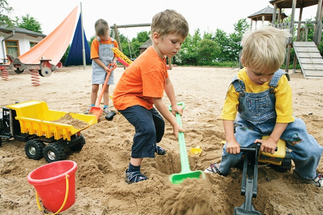
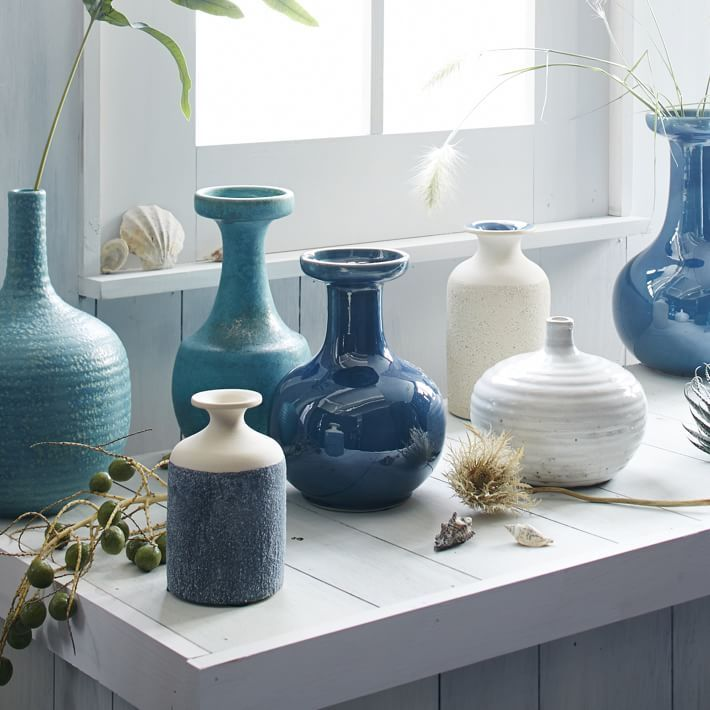

Vase
lat. vas/ vasis: Gefäß, Geschirr

Die Gefäße haben sehr unterschiedliche Formen und Designs, aber die meisten alten und antiken Vasen folgen der Tradition eines großen, breiten oder gebogenen Bodens, der einen großen Körper ergibt, der sehr nützlich für die Aufbewahrung von Wasser ist, dann dünner und dünner. Schulter, normalerweise ist die Hälfte der Literflasche der Hals, und schließlich fällt der Rand der Flasche normalerweise heraus, damit sich die Blumen im Inneren auf schöne Weise öffnen können, anstatt sie alle kopfüber in eine Richtung zu bringen.
